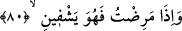

içirir.”[11] hadîsindeki hakikat düsturu olan kelâmın sırlarından bir rayiha anlaşılabilir.
Sana gelen ihsan, “O beni yedirir” sofrasındandır;
Kadeh de sürekli “O beni içirir” şarabındandır.
Sen benim dinimin kıblesisin, Bu sebepten insanlara dedim ki:
“Sizin dininiz size, benim dinim banadır” (el-Kâfirûn, 109/6)
İnsanlar, hadiste zikredilen yiyecek ve içecek konusunda iki görüşe ayrıldılar: Birinci
grup, onların ağızla hissedilen yiyecek ve içecek olduğunu söylediler. “Bu, lafzın hakîkî
anlamıdır. Onu terk etmeyi zorunluluk kılacak bir şey de yoktur. Bazıları O’na cennet
taâmından getirildiğini söylemiştir. İkincisi hadisten maksadın Allah’ın O’na gıda
olarak verdiği ma’rifetler, kalbine akıttığı kendisine münâcâtın lezzeti, kendisine
yakınlık, muhabbetinin nimetleri ile bunların peşinden gelen hallerdir. Bu haller
kalplerin gıdası, ruhların erdiği nimetler, gözlerin aydınlığı ve nefislerin sevincidir.
Şeyh Üftâde (k.s.) der ki: Peygamberimiz (s.a.)’in zâhirde yemek yemesi zayıf
ümmeti içindir. Yoksa hakîkatta onun yemeye ve içmeye ihtiyacı yoktu. O’nun karnına
taş bağladığına dâir rivâyete gelince o, açlıktan değildi. Bilakis letâfetinin kemâlinden
dolayı melekûta yükselmemesi, mülk ve irşâd âleminde kalmasının gerçekleşmesi
içindi. Onun ümmetinden bazılarının da, senelerce yemediği ve içmediği nakledilmiştir.
Kudsiyet âlemine cezbolunmasının ve beşerî hicablardan arınmasının kuvvetli
olmasından dolayı o bu konuda ümmetinden daha evlâ ve daha güçlüdür.
Rasûlullah (s.a.)’in zamanında bir sucu vardı. Üç gün “Yeryüzünde hiç bir canlı
yoktur ki, rızkı Allah’a aid olmasın (Hûd, 11/6)” âyetini okuyarak Peygamber (s.a.)’i
takip etti. Sonra su kırbasını attı. Rüyasında birisi bir bardak cennet şarabı getirdi ve
ona içirdi. Nitekim Keşfü’l-esrâr’da böyle geçmektedir.
80. Hastalandığım zaman bana şifa veren O’dur.
“Hastalandığım zaman bana şifâ veren” hastalıktan kurtarıp iyileştiren yalnızca
“O’dur” yoksa doktorlar değil.
İbrâhim (a.s.)’ın kavmi hastalığın zamandan, gıdâlardan geldiğini, şifanın ise
doktorlardan ve ilaçlardan olduğunu söylüyorlardı. İşte İbrâhim (a.s.) hasta edenin, şifâ
veren de olduğunu, O’nun da Allah Teâlâ olduğunu bildirdi. Ancak hastalığı nefsine
nisbet etti ve “Beni hastalandırdığı zaman” demedi. Şifayı ise Allah’a nisbet etti.
Halbuki ikisi de Allah Teâlâ’dandır. İbrâhim (a.s.) burada, ifade açısından hüsn-i edebi